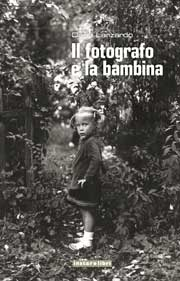

Il fotografo e la bambina - Recensione

Giovanni De Luna su Tuttolibri LA STAMPA del 20 dicembre 2008
LA BAMBINA CHE NON SI MISE IN POSA
Sembra sempre che le parole scritte stiano per soccombere di fronte all’alluvione di immagini e suoni in cui siamo quotidianamente immersi; il baricentro della cultura si è progressivamente spostato verso l’immagine e verso nuove forme di oralità, dando avvio a un drastico mutamento rispetto a tutto quello che avevamo prima conosciuto.
E’ come se i flussi dell’informazione del sapere, del denaro, dei beni, delle persone e delle immagini si siano intensificati in misura tale da erodere il senso della distanza spaziale che isolava le persone le une dalle altre e le liberava dalla necessità di pensare alle faccende di tutte le altre persone.
In questo modo è cambiata radicalmente l’immagine dell’umanità. Ora però è proprio un grande fotografo come Dario Lanzardo a scendere in campo con un libro – Il fotografo e la bambina – (Instar libri, pp.205, E 14) nel quale è come costretto a ricorrere alle parole scritte per spiegare le sue immagini, a restituire a quegli scatti lo spessore di un racconto.
Come ci ricorda Goffredo Fofi nella sua introduzione Lanzardo scrive e fotografa, usa le parole e l’immagine, in una testimonianza di fiducia appassionata verso entrambe. Nel suo libro si avvicendano paesaggi di un,a Torino fluviale e insolita, fabbriche abbandonate, statue e monumenti, spaventapasseri, un quadro che rappresenta un soldato morto di paura in trincea, schiantato da un infarto al momento dell’assalto…
Ma sono i personaggi che lo obbligano a fermarsi e a ricorrere alla scrittura: la vecchia postina della Val di vara (“nel sorriso e nello sguardo di quella donna… avevo visto l’espressione di un’anima trasparente e delicata alla quale la fotografia poteva solo togliere qualcosa”), un uomo maturo in piazza San Marco, (“fronte spaziosa, superbo naso adunco, mento forte, bocca appena incisa: un profilo di roccia”), il professore di disegno di macchine, un vecchio ufficiale in pensione identico, ma proprio identico a Totò, i contadini, gli studenti, i militanti protagonisti della ‘rivoluzione dei garofani’ nel Portogallo del 1975…. E, soprattutto, la bambina che da il titolo al libro: bionda, con le treccine, la bambina non si è messa in posa, anzi è ferma con le mani sui fianchi e guarda in cagnesco il fotografo, facendolo sentire indiscreto, invadente, insinuando una certa inquietudine nella imperturbabilità dello sguardo meccanico del suo apparecchio.
Questa impennata mette a disagio Lanzardo, lo obbliga a interrogarsi su quello scatto, a mettere da parte la macchina fotografica e a prendere la penna. E a raccontare diffusamente la storia di quella bambina (la sua famiglia, i rapporti con un padre fragile e in difficoltà…), una storia suggerita da quela fotografia, ma che in quella fotografia non poteva essere contenuta, imprigionata.
Ed è così per la postina, il vecchio, il professore di disegno: Lanzardo scava nelle loro vite, le riattraversa e ce le racconta; alla fine, nella sua esperienza la scrittura si afferma ancora come la più straordinaria delle forme narrative, la più efficace nel ridare vigore e complessità alle storie e ai personaggi.